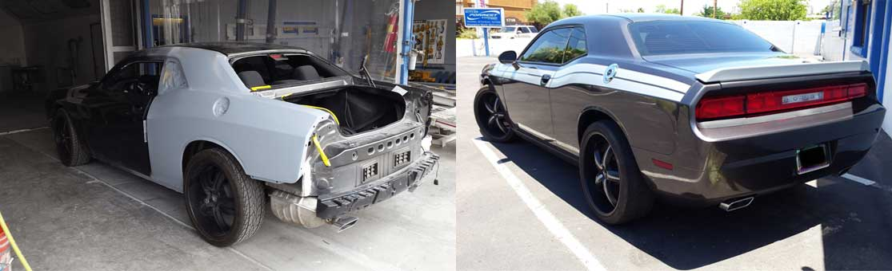

Forrest Collision Center está aquí para ayudarle con la reparación de su auto

Le acompañamos de principio a fin
Un accidente puede trastornarle la vida y afectarle el ánimo. No solo tiene que lidiar con su auto dañado, sino también con su compañía de seguros y presentar varios documentos para probar que su reclamo procede. Si la carrocería de su auto sufrió daños en Phoenix, AZ, o en los alrededores, Forrest Collision le ayuda.
Contáctenos en cualquier momento para nuestro servicio de grúa y pasamos a recoger su auto. Si usted nos lo permite, incluso trabajamos con su compañía de seguros y nos encargamos de todo el papeleo. Queremos que la reparación de su vehículo sea lo más sencilla posible, así que hacemos un esfuerzo extra.
Forrest Collision repara los daños de su auto; quédese tranquilo, porque le acompañamos de principio a fin.
Le ayudamos a volver a manejar lo antes posible
Sabemos lo difícil que es arreglárselas sin auto; por eso le ayudamos a tenerlo reparado, seguro y listo para manejar lo antes posible. Pregúntenos los plazos cuando reciba su presupuesto GRATIS. ¡Será un gusto reparar la carrocería de su auto, como confía Phoenix, AZ!

Todos nuestros trabajos de carrocería y pintura tienen garantía de por vida
Acuda a Forrest Collision and Sales y deje que nuestro equipo le quite ese peso de encima. Le dejamos el auto como estaba originalmente y nos aseguramos de que vuelva a manejar pronto.
Nuestro equipo de expertos con experiencia está preparado para todo tipo de reparaciones de autos. Tenemos taller propio y hacemos un esfuerzo extra para igualar la pintura de fábrica, pero con mayor y mejor durabilidad.